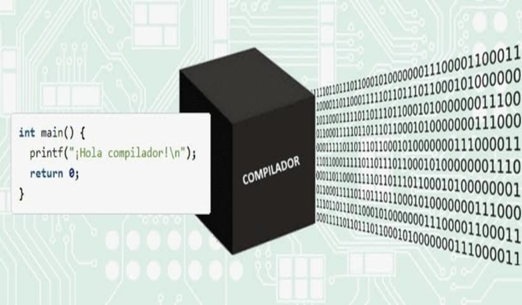

Introducción:
Un compilador es un programa informático que traduce código fuente escrito en un lenguaje de programación de alto nivel a un lenguaje de máquina que puede ser entendido y ejecutado por un ordenador específico. En otras palabras, el compilador actúa como un intérprete que convierte el lenguaje que los humanos pueden leer en el lenguaje que las computadoras comprenden.
Componentes de un Compilador:
Los compiladores generalmente se componen de varios módulos o etapas:
Análisis léxico: Divide el código fuente en tokens, que son unidades básicas como palabras clave, identificadores, operadores y símbolos.
Análisis sintáctico: Agrupa los tokens en una estructura sintáctica de acuerdo con la gramática del lenguaje de programación.
Análisis semántico: Comprueba la corrección semántica del código, asegurando que las expresiones sean válidas y tengan sentido en el contexto del programa.
Generación de código intermedio: Genera una representación intermedia del código fuente, como un árbol de sintaxis o código P-code, que es más fácil de optimizar.
Optimización: Aplica técnicas de optimización para mejorar el rendimiento del código generado, como eliminar código redundante, simplificar expresiones y reordenar instrucciones.
Generación de código: Traduce el código intermedio al lenguaje de máquina específico del ordenador objetivo.
Ejemplo:
Imaginemos un programa simple en lenguaje C que imprime "Hola, mundo!" en la pantalla. El compilador traducirá este código fuente en lenguaje C a instrucciones de máquina que la CPU del ordenador puede entender y ejecutar, mostrando finalmente el mensaje "Hola, mundo!" en la pantalla.